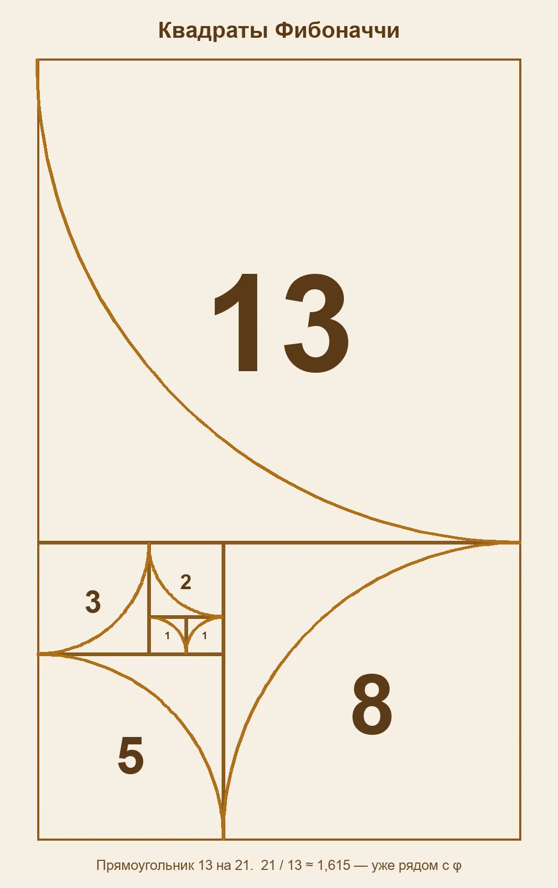
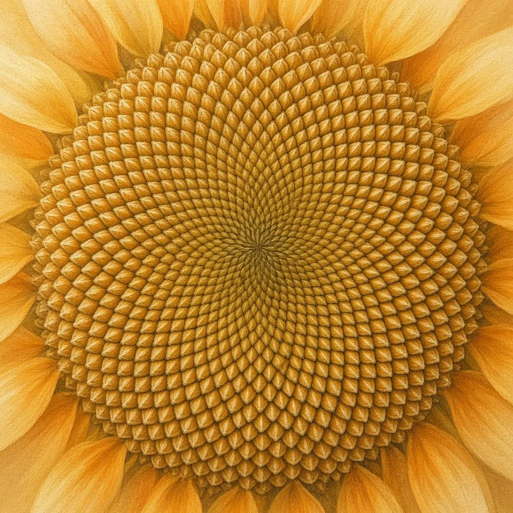
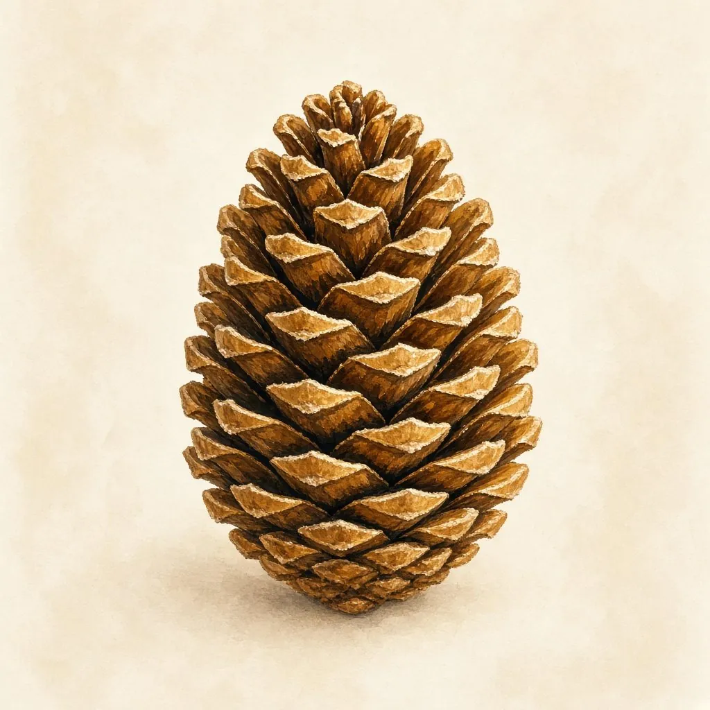
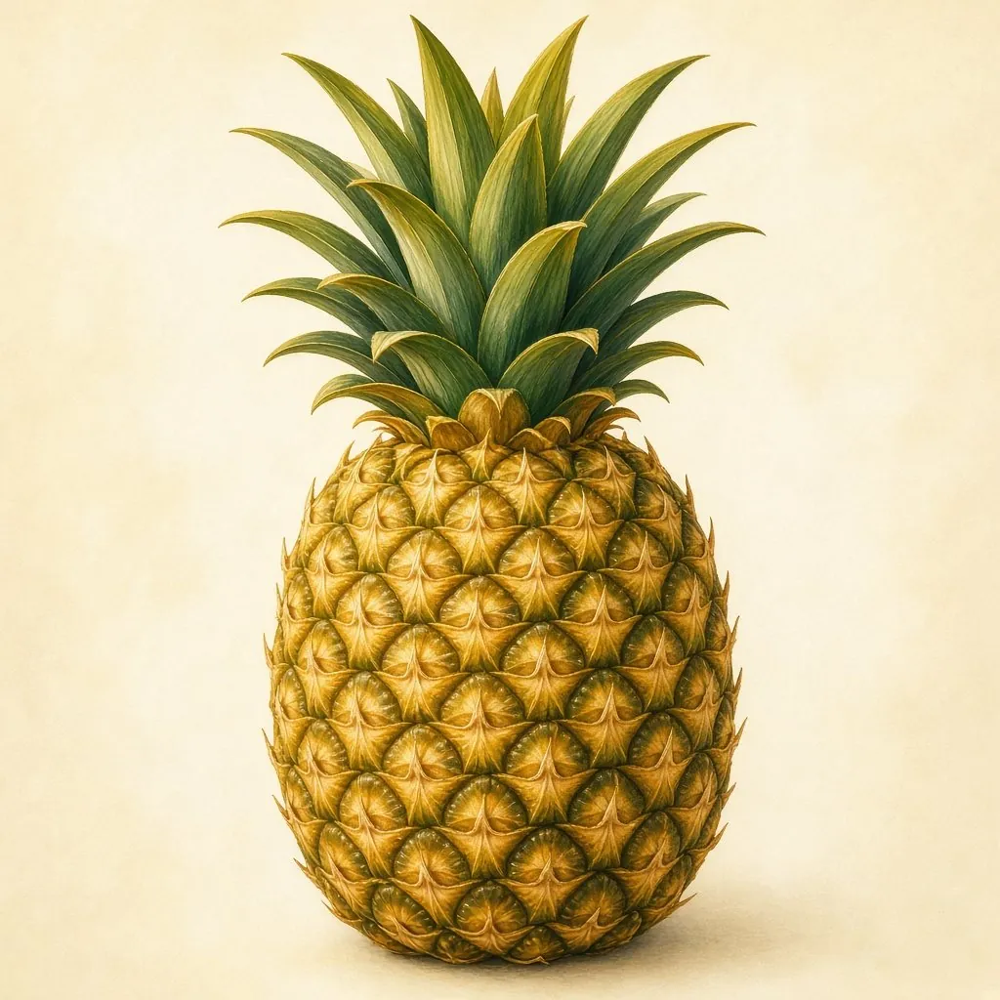
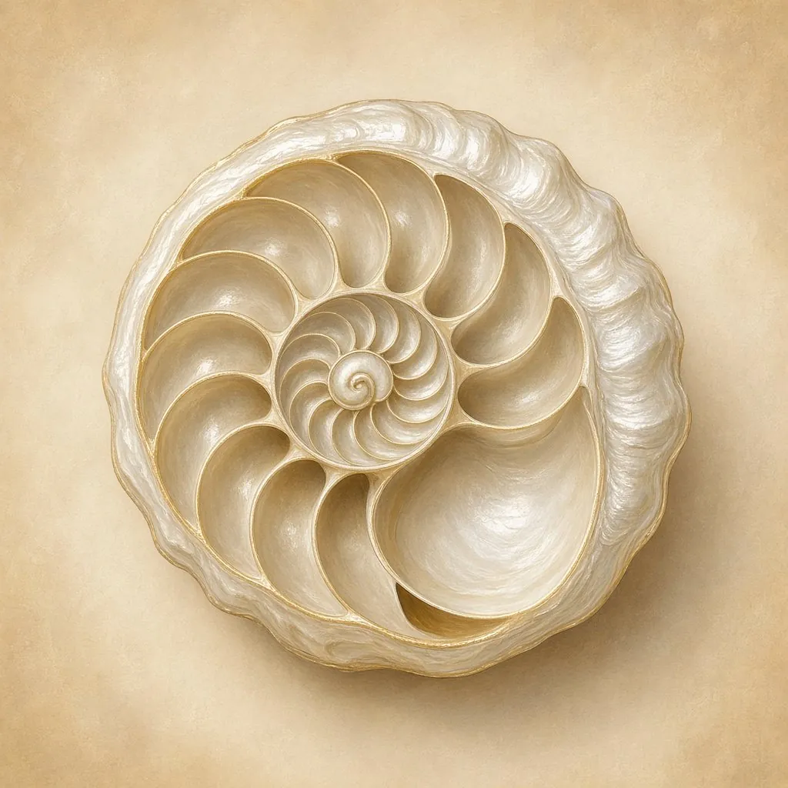
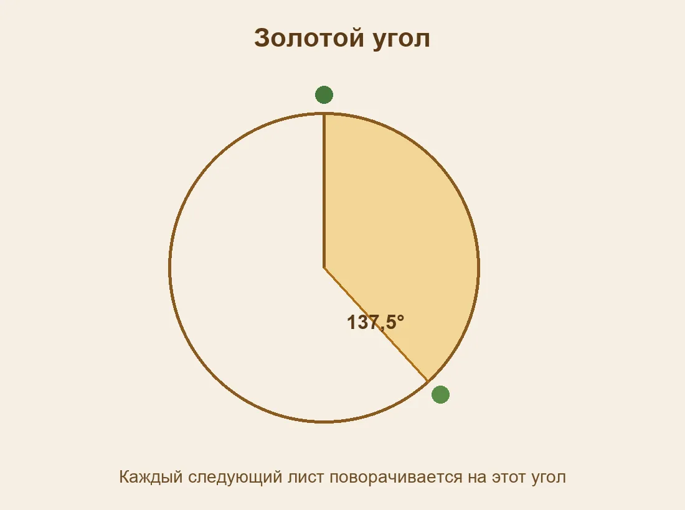
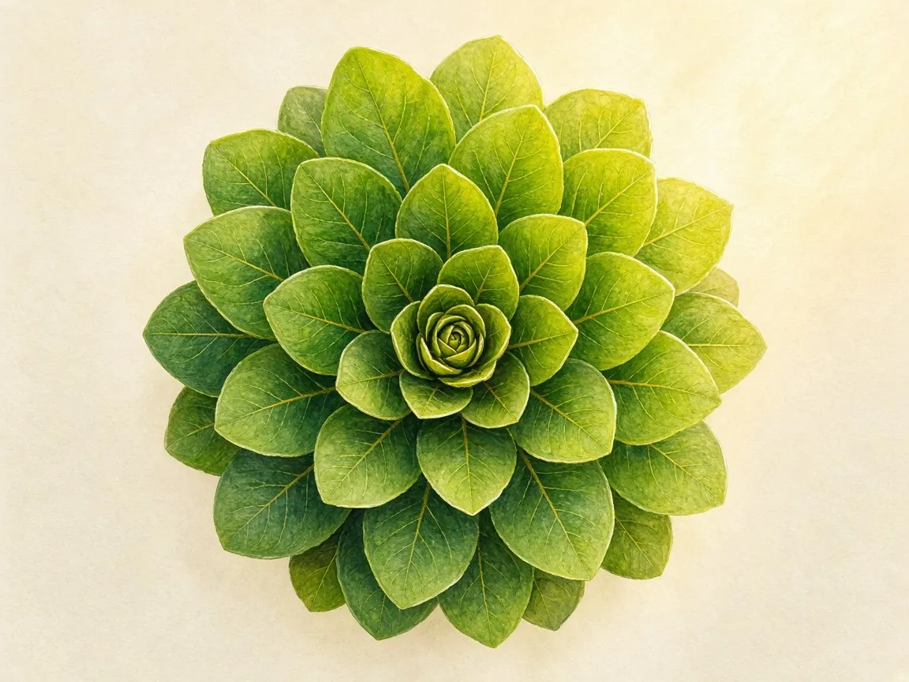
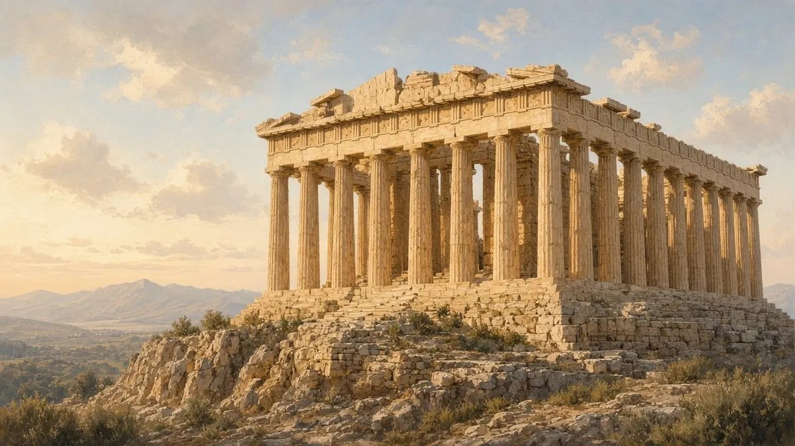
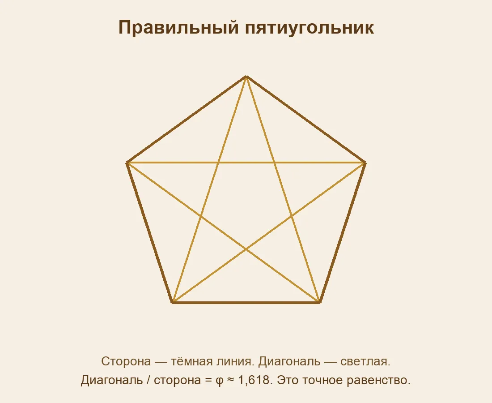

Где математика прячется вокруг нас — и где её только дорисовывают.
Эта работа про число, которое люди обсуждают больше двух тысяч лет. Его называют золотым сечением. Оно связано с числами Фибоначчи и с тем, как некоторые растения укладывают семена и листья. В интернете им объясняют почти всё: храмы, картины, лица, раковины. Я решил разделить три вещи: определение, проверенные примеры и красивые легенды.
Берём отрезок и делим его на две части, большую и меньшую. Золотое сечение — это когда целый отрезок относится к большей части так же, как большая часть относится к меньшей.
φ = (1 + √5) / 2 ≈ 1,618
Букву φ читают «фи». Число иррациональное: цифры после запятой не заканчиваются и не повторяются. В «Началах» Евклида такое деление называется «крайним и средним отношением». Это определение, а не картинка. Картинку ещё нужно проверить измерением.
Ряд начинается так: 1, 1, 2, 3, 5, 8, 13, 21, 34, 55, 89, 144… Каждое следующее число — сумма двух предыдущих. В 1202 году Леонардо Пизанский, которого позже назвали Фибоначчи, описал этот ряд в задаче про кроликов. Само имя «числа Фибоначчи» появилось только в XIX веке.
Если делить каждое число на предыдущее, результат быстро идёт к φ:
| Делим | Получается |
|---|---|
| 8 / 5 | 1,6 |
| 13 / 8 | 1,625 |
| 21 / 13 | 1,615… |
| 34 / 21 | 1,619… |
| 55 / 34 | 1,618… |
| 89 / 55 | 1,618… |
Это не случайное сходство. Есть теорема: предел отношения соседних чисел Фибоначчи равен φ. Чем дальше по ряду, тем меньше разница.

На схеме квадраты со сторонами 1, 1, 2, 3, 5, 8 и 13. Вместе они составляют прямоугольник 13 на 21. В каждом квадрате проведена четверть окружности. Так получается спираль, которую часто сравнивают с золотой.
У многих растений новые листья и семена появляются не как попало. Их удобно описывать числами Фибоначчи. Слово «часто» здесь важнее слова «всегда»: живой цветок не обязан совпасть с учебником.



Так растению проще уложить семена плотнее, а листьям — меньше загораживать друг другу свет. Это задача упаковки, а не украшение.
Красивая спираль ничего не доказывает сама по себе. Раковина наутилуса — любимый пример из интернета. У неё правда логарифмическая спираль, камеры растут похожим образом. Но когда измеряют настоящую раковину, отношение соседних витков обычно не равно φ. На рисунке спираль легко сделать идеальной. Рисунок — не измерение.

Та же ошибка случается со зданиями и картинами. Если очень хочется увидеть золотой прямоугольник, его почти всегда можно подогнать: чуть сдвинул углы — и отношение уже другое.
Нужно измерить две длины и поделить большую на меньшую. Потом сравнить результат с 1,618.
Например, прямоугольник 16 см на 10 см: 16 / 10 = 1,6. Это близко, но не точное золотое сечение. Разница заметна уже во втором знаке после запятой.
Ниже та же проверка сделана прямо на странице. Можно подставить свои числа — с линейки, с фотографии или просто наугад.
1, 1
У растения аргумент сильнее, если посчитаны сами спирали и получились соседние числа Фибоначчи. Сначала счёт, потом восхищение.
Новый лист удобно ставить там, где он меньше всего перекрывает старые. Для этого каждый следующий лист поворачивают примерно на 137,5°. Это золотой угол. Его находят из того же числа φ:
360° / φ² ≈ 137,5°
Угол устроен так, что листья почти никогда не встают точно друг над другом. Свет достаётся большему числу листьев.


В 1979 году Хельмут Фогель предложил простую модель корзинки подсолнуха. Семя номер n лежит на расстоянии, которое растёт как √n, и повёрнуто на n раз по 137,5°. На таком чертеже сами появляются спирали Фибоначчи.
В 1992 году физики Стефан Дуади и Ив Кудер показали, что такой порядок может возникать сам. В опыте капли магнитной жидкости падали в центр тарелки и отталкивались от соседей. Числа Фибоначчи в опыт никто не закладывал, но капли выстраивались в те же спирали.

Красивая история полезна, если после неё хочется измерить. Вредна, если после неё уже ничего не проверяют.
В правильном пятиугольнике отношение диагонали к стороне равно φ. Это теорема, её можно доказать, а не «разглядеть».

Та же пятёрная симметрия неожиданно вышла из лаборатории. В 1982 году Даниэль Шехтман увидел в сплаве узор, которого по тогдашним правилам «не могло быть»: порядок был, а обычной повторяющейся решётки не было. Такие структуры назвали квазикристаллами. В их математике появляется φ. В 2011 году Шехтман получил за это открытие Нобелевскую премию по химии.
Здесь золотое сечение не нарисовано поверх фотографии. Оно входит в описание фигуры и симметрии.
Золотое сечение — настоящая и красивая математика. Оно связано с числами Фибоначчи, с золотым углом и с тем, как некоторые растения укладывают листья и семена. Но «я вижу спираль» — ещё не доказательство. Раковину, храм и портрет нужно измерять.
Мне было важно не отменить красоту, а понять, какая её часть считается. Когда миф убираешь, остаётся задача, которую можно решить самому.
Этот раздел — моя фантазия, не чертёж и не научный факт. Я представил город, в котором математику видно с улицы: башни закручены как раковины, крыши похожи на корзинки подсолнуха, а река делает плавный изгиб.
Ролик показывает построение, о котором написано выше. Квадраты 1, 1, 2, 3, 5, 8 и 13 встают рядом, и в каждом рисуется четверть окружности.
Длины нот идут группами 1, 1, 2, 3, 5. Это не «музыка сфер» и не доказательство, что золотое сечение звучит в природе. Это способ услышать сам ряд.
Важно: город выдуман. Настоящее золотое сечение живёт в формулах, измерениях и опытах.